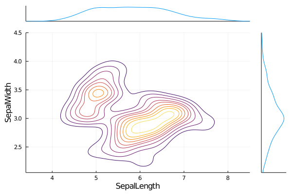
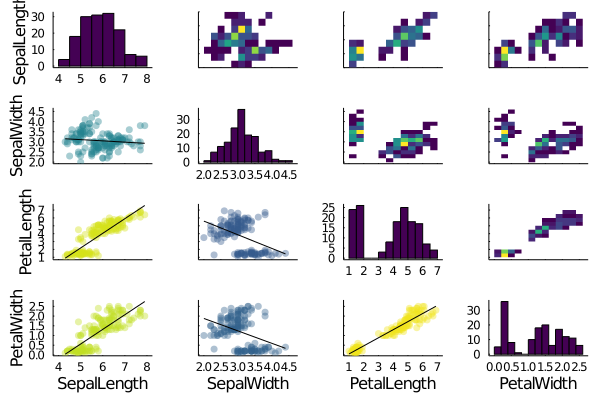

DataFrames.jl
DataFrames is a package that provides a set of tools for working with tabular data in Julia. Its design and functionality are similar to those of pandas (in Python) and data.frame, data.table and dplyr (in R), making it a great general purpose data science tool, especially for those coming to Julia from R or Python.
Creating DataFrames
The core of the package is the DataFrame that represents a data table. The simplest way of constructing a DataFrame is to pass column vectors using keyword arguments or pairs
using DataFrames
df = DataFrame(A = 1:4, B = ["M", "F", "F", "M"], C = rand(4))| A | B | C | |
|---|---|---|---|
| Int64 | String | Float64 | |
| 1 | 1 | M | 0.761104 |
| 2 | 2 | F | 0.752123 |
| 3 | 3 | F | 0.168072 |
| 4 | 4 | M | 0.825091 |
Since each column is stored in a DataFrame as a separate vector, it is possible to combine columns of a different element types. Column can be accesed directly without copying as follows
df.A4-element Array{Int64,1}:
1
2
3
4or using indexing syntax which is similar to indexing syntax
df[!, :A]4-element Array{Int64,1}:
1
2
3
4Note, that we use ! to select all rows. If we use :, then we get a copy of a column. Since vectors are mutable structures and accessing a column of DataFrame via syntax above does not make a copy, it is possible to change elements of the DataFrame as follows
df.A[1] = 5
df| A | B | C | |
|---|---|---|---|
| Int64 | String | Float64 | |
| 1 | 5 | M | 0.761104 |
| 2 | 2 | F | 0.752123 |
| 3 | 3 | F | 0.168072 |
| 4 | 4 | M | 0.825091 |
However, sometimes it is useful to get a copy of a column instead. To do that, we can use the following syntax
col = df[:, :A]
col[1] = 4
df| A | B | C | |
|---|---|---|---|
| Int64 | String | Float64 | |
| 1 | 5 | M | 0.761104 |
| 2 | 2 | F | 0.752123 |
| 3 | 3 | F | 0.168072 |
| 4 | 4 | M | 0.825091 |
DataFrames allows to use Symbols (like :A) and strings (like "A") for all column indexing operations for convenience. However, using Symbols is slightly faster and should generally be preferred, if not generating them via string manipulation.
Saving and loading
The standard format for storing table data is csv file format. The CSV package provides an interface for saving and loading csv files.
using CSV
CSV.write("dataframe.csv", df)
table = CSV.read("dataframe.csv", DataFrame; header = true)| A | B | C | |
|---|---|---|---|
| Int64 | String | Float64 | |
| 1 | 5 | M | 0.761104 |
| 2 | 2 | F | 0.752123 |
| 3 | 3 | F | 0.168072 |
| 4 | 4 | M | 0.825091 |
See the package documentation for more information.
Adding columns and rows
It is common for tables to be created column by column or row by row. DataFrames provides an easy way to extend existing tables. To add a new column to a DataFrame, we can use a direct way as follows
df.D = [:a, :b, :c, :d]
df| A | B | C | D | |
|---|---|---|---|---|
| Int64 | String | Float64 | Symbol | |
| 1 | 5 | M | 0.761104 | a |
| 2 | 2 | F | 0.752123 | b |
| 3 | 3 | F | 0.168072 | c |
| 4 | 4 | M | 0.825091 | d |
Alternatively, we can use the insertcols! function. This feature allows you to insert multiple columns at once and also allows for other advanced options. For example, you can specify the column index into which the columns are to be inserted. For more information, see the insertcols! help
insertcols!(df, 3, :B => rand(4), :B => 11:14; makeunique = true)| A | B | B_1 | B_2 | C | D | |
|---|---|---|---|---|---|---|
| Int64 | String | Float64 | Int64 | Float64 | Symbol | |
| 1 | 5 | M | 0.690949 | 11 | 0.761104 | a |
| 2 | 2 | F | 0.103873 | 12 | 0.752123 | b |
| 3 | 3 | F | 0.417709 | 13 | 0.168072 | c |
| 4 | 4 | M | 0.900176 | 14 | 0.825091 | d |
New rows can be added to the existing DataFrame using the push! function. New rows can be in the form of a vector or tuple of the correct length or in the form of a dictionary with keys the same as the column names of the target table
push!(df, [10, "F", 0.1, 15, 0.235, :f])
push!(df, (10, "F", 0.1, 15, 0.235, :f))
push!(df, Dict(:B_1 => 0.1, :B_2 => 15, :A => 10, :D => :f, :B => "F", :C => 0.235))
df| A | B | B_1 | B_2 | C | D | |
|---|---|---|---|---|---|---|
| Int64 | String | Float64 | Int64 | Float64 | Symbol | |
| 1 | 5 | M | 0.690949 | 11 | 0.761104 | a |
| 2 | 2 | F | 0.103873 | 12 | 0.752123 | b |
| 3 | 3 | F | 0.417709 | 13 | 0.168072 | c |
| 4 | 4 | M | 0.900176 | 14 | 0.825091 | d |
| 5 | 10 | F | 0.1 | 15 | 0.235 | f |
| 6 | 10 | F | 0.1 | 15 | 0.235 | f |
| 7 | 10 | F | 0.1 | 15 | 0.235 | f |
It is possible to start with an empty DataFrame. There is no problem when the DataFrame is constructed in a column by column manner
using DataFrames
df_empty = DataFrame()
df_empty.A = 1:3
df_empty.B = [:a, :b, :c]
df_empty| A | B | |
|---|---|---|
| Int64 | Symbol | |
| 1 | 1 | a |
| 2 | 2 | b |
| 3 | 3 | c |
However, this approach will not work if the DataFrame is created row by row. In this case, the empty DataFrame must be initialized with empty columns with the correct element types
df_empty = DataFrame(A = Int[], B = Symbol[])
push!(df_empty, [1, :a])
push!(df_empty, (2, :b))
push!(df_empty, Dict(:A => 3, :B => :c))
df_empty| A | B | |
|---|---|---|
| Int64 | Symbol | |
| 1 | 1 | a |
| 2 | 2 | b |
| 3 | 3 | c |
Renaming
Sometimes it is useful to get the names of all the columns. Two functions can be used for such a task. The first is the names function, which returns column names as a vector of Strings. The propertynames function does the same thing but returns a vector of Symbols
julia> names(df)
6-element Array{String,1}:
"A"
"B"
"B_1"
"B_2"
"C"
"D"
julia> propertynames(df)
6-element Array{Symbol,1}:
:A
:B
:B_1
:B_2
:C
:DIf we are not satisfied with the column names, we can simply change them using the rename! function. This function can be used to rename all columns at once
rename!(df, [:a, :b, :c, :d, :e, :f])
df| a | b | c | d | e | f | |
|---|---|---|---|---|---|---|
| Int64 | String | Float64 | Int64 | Float64 | Symbol | |
| 1 | 5 | M | 0.690949 | 11 | 0.761104 | a |
| 2 | 2 | F | 0.103873 | 12 | 0.752123 | b |
| 3 | 3 | F | 0.417709 | 13 | 0.168072 | c |
| 4 | 4 | M | 0.900176 | 14 | 0.825091 | d |
| 5 | 10 | F | 0.1 | 15 | 0.235 | f |
| 6 | 10 | F | 0.1 | 15 | 0.235 | f |
| 7 | 10 | F | 0.1 | 15 | 0.235 | f |
or to change the name of specific columns
rename!(df, :a => :A, :f => :F)
df| A | b | c | d | e | F | |
|---|---|---|---|---|---|---|
| Int64 | String | Float64 | Int64 | Float64 | Symbol | |
| 1 | 5 | M | 0.690949 | 11 | 0.761104 | a |
| 2 | 2 | F | 0.103873 | 12 | 0.752123 | b |
| 3 | 3 | F | 0.417709 | 13 | 0.168072 | c |
| 4 | 4 | M | 0.900176 | 14 | 0.825091 | d |
| 5 | 10 | F | 0.1 | 15 | 0.235 | f |
| 6 | 10 | F | 0.1 | 15 | 0.235 | f |
| 7 | 10 | F | 0.1 | 15 | 0.235 | f |
Moreover, it is possible to use a function to generate column names
myname(x) = string("column_", uppercase(x))
rename!(myname, df)
df| column_A | column_B | column_C | column_D | column_E | column_F | |
|---|---|---|---|---|---|---|
| Int64 | String | Float64 | Int64 | Float64 | Symbol | |
| 1 | 5 | M | 0.690949 | 11 | 0.761104 | a |
| 2 | 2 | F | 0.103873 | 12 | 0.752123 | b |
| 3 | 3 | F | 0.417709 | 13 | 0.168072 | c |
| 4 | 4 | M | 0.900176 | 14 | 0.825091 | d |
| 5 | 10 | F | 0.1 | 15 | 0.235 | f |
| 6 | 10 | F | 0.1 | 15 | 0.235 | f |
| 7 | 10 | F | 0.1 | 15 | 0.235 | f |
Working with DataFrames
In the next part of the lecture, we will use the RDatasets. That package provides an easy way for Julia users to use most of the standard data sets that are available in the core of R programming language. For further examples, we will use Iris dataset
using RDatasets, DataFrames
iris = dataset("datasets", "iris")
first(iris, 6)| SepalLength | SepalWidth | PetalLength | PetalWidth | Species | |
|---|---|---|---|---|---|
| Float64 | Float64 | Float64 | Float64 | Cat… | |
| 1 | 5.1 | 3.5 | 1.4 | 0.2 | setosa |
| 2 | 4.9 | 3.0 | 1.4 | 0.2 | setosa |
| 3 | 4.7 | 3.2 | 1.3 | 0.2 | setosa |
| 4 | 4.6 | 3.1 | 1.5 | 0.2 | setosa |
| 5 | 5.0 | 3.6 | 1.4 | 0.2 | setosa |
| 6 | 5.4 | 3.9 | 1.7 | 0.4 | setosa |
Note, that we use the first function to print only the first n = 6 rows of the given table. Similarly, the last function can be used to show the last n rows of the given table.
When we start to work with a new data table, that we are not familiar with, it is very useful to get some basic description of the dataset. DataFrames provides the describe function that returns descriptive statistics for each column of the given DataFrame
describe(iris)| variable | mean | min | median | max | nmissing | eltype | |
|---|---|---|---|---|---|---|---|
| Symbol | Union… | Any | Union… | Any | Int64 | DataType | |
| 1 | SepalLength | 5.84333 | 4.3 | 5.8 | 7.9 | 0 | Float64 |
| 2 | SepalWidth | 3.05733 | 2.0 | 3.0 | 4.4 | 0 | Float64 |
| 3 | PetalLength | 3.758 | 1.0 | 4.35 | 6.9 | 0 | Float64 |
| 4 | PetalWidth | 1.19933 | 0.1 | 1.3 | 2.5 | 0 | Float64 |
| 5 | Species | setosa | virginica | 0 | CategoricalValue{String,UInt8} |
It is also possible to get a specific subset of a DataFrame. To do that, we can use indexing syntax which is similar to indexing syntax for matrices
iris[2:4, [:SepalLength, :Species]]| SepalLength | Species | |
|---|---|---|
| Float64 | Cat… | |
| 1 | 4.9 | setosa |
| 2 | 4.7 | setosa |
| 3 | 4.6 | setosa |
Additionally, DataFrames provides Not, Between, Cols and All selectors that can be used in more complex column selection scenarios
iris[2:4, Not([:SepalLength, :Species])]| SepalWidth | PetalLength | PetalWidth | |
|---|---|---|---|
| Float64 | Float64 | Float64 | |
| 1 | 3.0 | 1.4 | 0.2 |
| 2 | 3.2 | 1.3 | 0.2 |
| 3 | 3.1 | 1.5 | 0.2 |
The last thing, that we will present in this section, is the Query package, which allows simple advanced manipulation with DataFrame. For example, in the code below, we select only rows where SepalLength >= 6 and at the same time SepalWidth >= 3.4. Then we create a new DataFrame, where for each of the selected rows we add corresponding Species, the sum of sepal length and width, and the sum of petal length and width
using Query
table = @from row in iris begin
@where row.SepalLength >= 6 && row.SepalWidth >= 3.4
@select {
row.Species,
SepalSum = row.SepalLength + row.SepalWidth,
PetalSum = row.PetalLength + row.PetalWidth,
}
@collect DataFrame
end| Species | SepalSum | PetalSum | |
|---|---|---|---|
| Cat… | Float64 | Float64 | |
| 1 | versicolor | 9.4 | 6.1 |
| 2 | virginica | 10.8 | 8.6 |
| 3 | virginica | 11.5 | 8.9 |
| 4 | virginica | 11.7 | 8.4 |
| 5 | virginica | 9.7 | 8.0 |
| 6 | virginica | 9.6 | 7.7 |
There are tons of other topics related to DataFrames, however, there is no time to cover them all. Also, there is also no reason to do that, since DataFrames provides very good documentation with a lof of examples
Visualizing using StatsPlots
StatsPlots provides recipes for plotting histograms, boxplots, violin plots, etc. This package also provides @df macro, which allows simple plotting of tabular data. As a simple example, we can create a scatter plot of SepalLength and SepalWidth grouped based on the Species
using StatsPlots
@df iris scatter(
:SepalLength,
:SepalWidth;
xlabel = "SepalLength",
ylabel = "SepalWidth",
group = :Species,
marker = ([:d :h :star7], 8),
)
Note that keyword arguments can be used in the same way as usual.
StatsPlots provides a large amount of statistic related plots. As one example, we can mention marginalkde function for plotting marginal kernel density estimations. In statistics, kernel density estimation (KDE) is a non-parametric way to estimate the probability density function of a random variable. The marginalkde function can be used together with @df macro as follows
@df iris marginalkde(
:SepalLength,
:SepalWidth;
xlabel = "SepalLength",
ylabel = "SepalWidth",
)
Another example of a useful function for statistically related graphs is the corrplot function, which shows the correlation between input variables
@df iris corrplot(
cols(1:4);
grid = false,
nbins = 15,
fillcolor = :viridis,
markercolor = :viridis,
)
Note, that in this case, we use cols(1:4) instead of the names of columns. The reason for that is simple: it is shorter. Anyway, it is possible to use a vector of column names too.